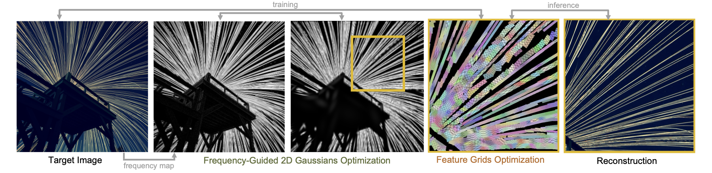
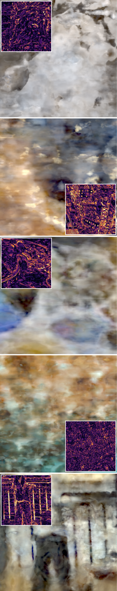
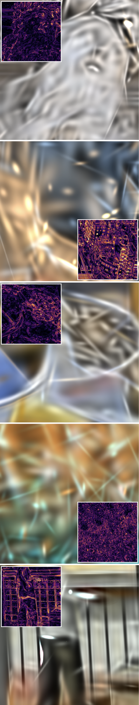
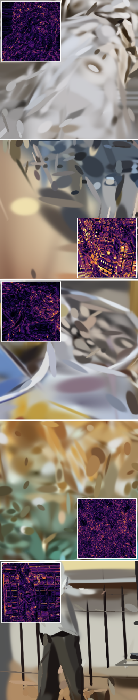
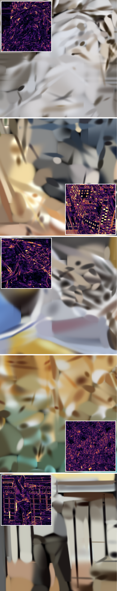
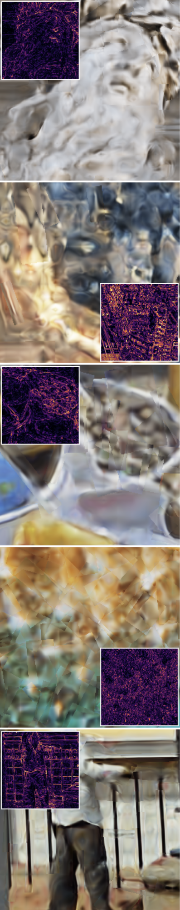

IEEE/CVF WACV 2027
Neural representation has emerged as a powerful tool to mitigate the demand for increasingly higher-resolution images. However, a fundamental trade-off remains between structured (e.g., feature grids, which offer spatial consistency) and unstructured (e.g., 2D Gaussians, which adaptively capture local variances) representations. Here, we present Gaussian-Grid, a hybrid neural representation that adaptively integrates structured and unstructured primitives. By dynamically partitioning computation between 2D Gaussian distributions and their attached multi-resolution feature grids based on the local frequency content, Gaussian-Grid automatically optimizes its architecture to match the underlying complexity of the target signal. We evaluate our approach on high-resolution natural images and demonstrate its application as GPU-native dataset storage, showing 1.24–2.14× decoding speed improvement and PCIe data traffic reduction of 23×–176× over JPEG + ZIP data archiving. The results show that Gaussian-Grid maintains small memory footprints while achieving high reconstruction fidelity across a variety of datasets.
Gaussian-Grid represents an image as a collection of 2D Gaussians that each carry an embedded feature grid. The Gaussians act as a substrate that captures global geometric structure and anchors high-capacity feature grids only where local signal complexity demands them. A global canvas grid covers smooth, low-frequency content, and a lightweight 2-layer MLP decodes the blended features into pixel values. Training has two stages: (1) optimize Gaussians to match a local frequency map of the image, then (2) attach feature grids of appropriate resolution and optimize them against the image.

We evaluate on 100 validation images from DIV2K and 41 from CLIC2020, comparing against Image-GS, GaussianImage, SAD and Instant-NGP across 0.1–1.0 bpp. At 0.1 bpp, Gaussian-Grid reaches 25.58 dB PSNR on DIV2K (+0.86 dB over the next-best SAD) and 27.70 dB on CLIC2020 (+0.75 dB). It avoids the “oil painting” artifacts of primitive-based methods, while Instant-NGP shows noise-like patterns from hash collisions. Columns below show error-map insets at 0.1 bpp.

I-NGP

GI

SAD

Image-GS

Ours
Ref. crop
Because our representation decodes directly on the GPU, it avoids CPU-side JPEG/ZIP decoding and the PCIe transfer of full pixel grids. On the DIV2K validation set (NVIDIA RTX 5080), at 0.1 bpp Gaussian-Grid gives +2.33 dB PSNR over size-matched JPEG, decodes in 5.44 ms vs. 11.65 ms (2.14× faster), and transfers 47 KB over PCIe instead of 8,306 KB (176× less). The decode speedup holds at all budgets (1.24–2.14×) and PCIe reduction stays at 23×–176×. JPEG wins on PSNR above 0.4 bpp, so this targets GPU-only pipelines at low bitrates, such as retrieval, previews and thumbnail caching.
Gains depend on spatially heterogeneous frequency content; as frequency becomes uniform, allocation approaches the uniform baseline, and perceptual metrics such as LPIPS may not follow PSNR gains. Encoding is per-image optimization (about 24.3 min per image), so the method suits write-once, read-many storage.
Citation to be added.